Vision#
Some notes on vision science, from photoreceptors and retinal circuits to recording and imaging methods.
About this chapter
The chapter follows the signal. It starts in the retina: rods and cones, horizontal cells that subtract the surround, amacrine and ganglion cells that split the image into parallel channels, and the glia, pigment epithelium and blood supply that keep it all running (and the retinal diseases where they fail). It then goes through the LGN to V1 and out along the dorsal “where” and ventral “what” streams, ending with attention, lesion studies, development and plasticity.
Two other threads run through it. One is methods: patch clamp, electrode arrays and spike-triggered averages, calcium and voltage imaging, EEG, fMRI and PET, each placed on a map of spatial and temporal resolution. The other is theory: natural images are highly redundant, and center-surround receptive fields, whitening, efficient and sparse coding, and predictive coding are all ways of removing that redundancy before sending spikes down an expensive optic nerve.
Chapter outline: 23 sections
- Neural signalsA short review of the signaling facts used later.
- Electrophysiology4 figuresHow single cells are recorded.
- Recording + imaging1 interactiveRecording many cells at once.
- Rod and cone photoreceptor function2 figuresRods and cones trade sensitivity for speed: rods are sensitive and slow and saturate in daylight, cones are less sensitive, fast, and pack the fovea.
- Horizontal cells - outer retinal signaling and lateral inhibition1 interactiveAn on-center cell responds best to a small light spot.
- Signaling pathways through the retina - amacrine cells and inner retinal processing of visual informationBipolar cells start the parallel channels, and amacrine cells shape them on the way to the ganglion cells.
- Retinal ganglion cellsThe retina's output.
- Non-neuronal retina stuff1 figureThe cells that keep the retina running: glia, the pigment epithelium and two separate blood supplies.
- Retinal diseasesThree diseases, each damaging a different layer: macular degeneration (photoreceptors, RPE and choroid in the macula), diabetic retinopathy (leaky capillaries), and glaucoma (ganglion cells and the optic nerve).
- Experimental methods3 figuresNo method is good on every axis.
- Info processing in the visual systemVision is ill-posed: the same retinal image can come from many scenes, so the brain has to bring in priors.
- Dynamic range of rods + cones1 figureSpontaneous isomerizations set the lower limit of light detection.
- Whitening and tilingNeighboring pixels in natural images are correlated, with power falling as frequency rises.
- Visual pathways2 figuresEverything visual passes through the thalamus on its way to cortex.
- V1 (primary)1 interactive2 figuresV1 is where orientation and direction selectivity first appear.
- Extrastriate cortexBeyond V1 the areas split into a dorsal stream through MT (motion, where things are, vision for action) and a ventral stream through V4 and IT (color, form, objects, faces).
- Sparse codingWhy V1 has oriented, localized, bandpass receptive fields: representing natural images with as few active neurons as possible produces them.
- Object recognitionThe Gabor function (a sinusoid under a Gaussian envelope) is the standard model of a V1 simple cell.
- Top-down modulationAttention changes responses in V4 and even V1.
- Visual neuropsychologyWhat lesions show: blindsight after V1 damage, motion blindness after MT damage, loss of color after V4 damage, and agnosias such as prosopagnosia.
- Visual cortical development + plasticityThe steps any nervous system goes through as it is built, then three stages for the retina-LGN-V1 pathway: wiring set up before experience (with retinal waves), a critical period in which inputs compete, and more limited plasticity in adults.
- Adult plasticityAftereffects such as color afterimages and the tilt aftereffect are usually explained by fatigue of the stimulated neurons, but some last far too long for that.
- Alzheimer'sAlzheimer's shows up in the retina as well.
Neural signals#
A short review of the signaling facts used later. Spikes travel faster with dense, fast channels, wide axons and high membrane resistance; the last two set the length constant \(\lambda = \sqrt{r_m / r_a}\), how far a voltage spreads along the axon. An inhibitory synapse whose reversal potential is 0 (as \(E_{Cl}\) sometimes is) divides the response instead of subtracting from it: shunting inhibition.
ion channel properties
gating energy - how is the channel activated
ionic selectivity - which ions pass through
high ap velocity when these are high
channel density
channel kinetics
axon diameter
axon surface resistance
\(\lambda = \sqrt{\frac{r_m}{r_a}}\)
synapse types
electrical
chemical
postsynaptic receptors
ionotropic receptors - directly gated
metabotropic receptors - indirectly gated through 2nd messengers
If ion reversal potential is 0 (ex. \(E_{Cl}\) sometimes) then shunting = divisive inhibition
Electrophysiology#
How single cells are recorded. The figures show the recording circuit and the junction potentials that have to be canceled for the voltage reading to be right.
EEG - whole brain
ERG (electroretinogram) - whole retina
single cell
sharp micro-electrode - has problems
high resistance
poor seal with membrane
mechanically unstable
patch recording - uses suction to overcome powers
Flaw: bad for studying second-messenger systems because inside of electrode / cell fuse
different types (whole cell, outside-out, inside-out)
clamp
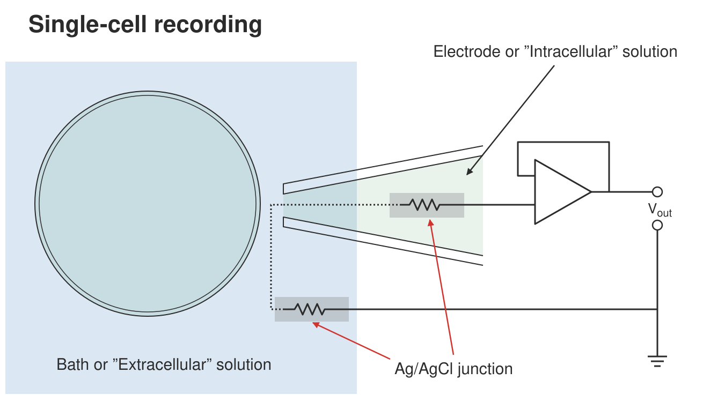
Fig. 99 Figure 1. A single-cell recording circuit. The pipette’s Ag/AgCl wire sits in “intracellular” solution, a second Ag/AgCl wire grounds the bath, and an amplifier reads the voltage between them.#
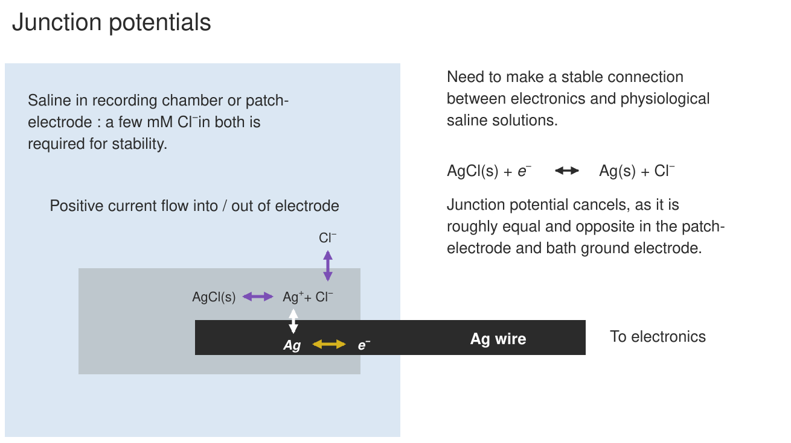
Fig. 100 Figure 2. Where the junction potential at each Ag/AgCl electrode comes from. A few mM Cl⁻ in both solutions keeps it stable, and the potentials at the pipette and the bath ground roughly cancel.#
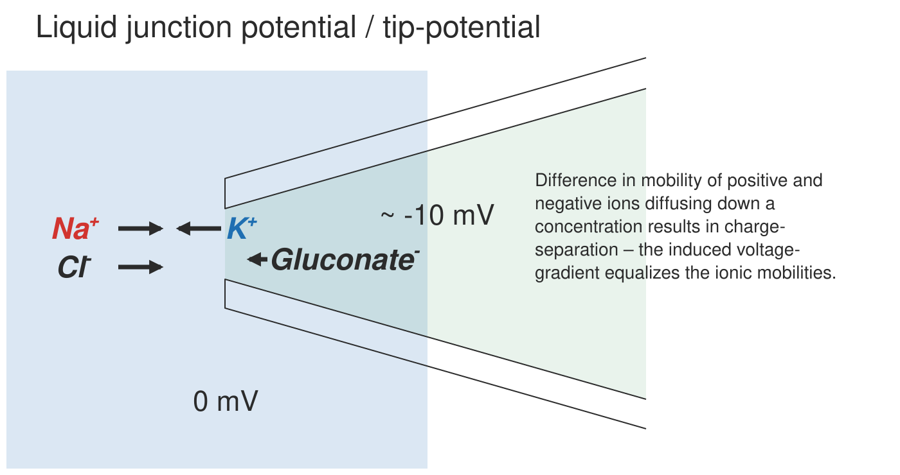
Fig. 101 Figure 3. The liquid junction potential at the pipette tip: ions in the pipette and the bath diffuse at different speeds, which separates charge and leaves the tip about −10 mV from the bath.#
types
whole-cell
cell-attached
inside-out
outside-out
whole cell perforated - generally better, but difficult
recording types
current-clamp - record potential
voltage clamp - record current - most common
conductance-clamp - complicated
IV curve - measured with voltage clamp
V - voltage clamped at
I - maximal current evoked by clamping at this voltage
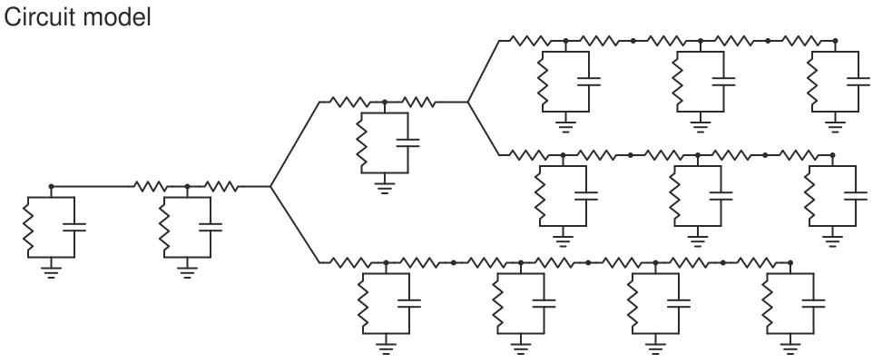
Fig. 102 Figure 4. A branching neuron as a compartmental circuit: each patch of membrane is a resistor and capacitor to ground, linked to its neighbors by axial resistors.#


Recording + imaging#
Recording many cells at once. A multi-electrode array under a piece of retina records many ganglion cells; showing white noise and averaging the frames before each spike gives each cell’s receptive field.
Electrode arrays#
Spike sorting assigns each recorded spike to a cell by its amplitude, shape and refractory period. The spike-triggered average then shows more than a blob: a ganglion cell’s field is a few small spots, one per cone it connects to, and clustering cells by their STA time course sorts them into types that tile the retina.
multi-electrode array recording (MEA)
well-suited for retina
can now get several thousand electrodes
put retina onto MEA to record ganglion cells
waves of activity spread accross retina during development - probably important for wiring retina
patch ~ 500µm accross
spike sorting
cluster spikes from different neurons based on amplitude, wave shape, refractory period violations
spatiotemporal white noise stimulu - sequence of stimulus frames with randomly assigned pixel intensities (Bernoulli or Gaussian)
spike-triggered average stimulus - averagin frames that correspond to spikes - yields receptive field
requires finding timing (too short and spike won’t fire, too long and won’t repeatedly fire)
retinal cell ganglion classification
cluster by STA timecourse and autocorrelation pca
after clustering, receptive fields of any cluster don’t overlap too much
cell mosaics - ganglion cells tile entire retina
ganglion cell receptive field instead of one blob is several small blobs (the cone array)
each blob corresponds to one cone cell
cones: red, green, blue cones are random
ganglion midget cells contain color information - make red-green connections
this is found in STA
connects to broad set of cells, not just closest
Imaging - voltage#
Voltage-sensitive dyes would record many cells’ voltages at once, but they are toxic and give tiny signals, since spikes are brief and small. Calcium imaging with GCaMPs is the practical substitute, at the cost of a slower signal than the voltage itself.
voltage-sensitive dyes - would be great
could provide spatially localized, non invasive recordings
doesn’t exists - usually toxic and inefficient (small fluorescence change / voltage change)
APs short and small area limiting number of photons
subthreshold PSPs (postsynaptic potentials) only have small voltage change
electrochromic - fast, low-sensitivity
quenching/FRET - slow, high capacitance
photo-induced electron transfer - fast, high sensitivity, low capacitance
currently being developed by evan miller at berkeley in chemistry
problem - lights up all the cells - trying to target a cell with genetics
calcium imaging
calcium influxes into cell through a variety of mechanisms
calcium indicators
original: aequorin - bioluminescent protein from jellyfish
calcium indicator - calcium binds to fluorophore and changes its shape, which changes its fluorescence
fret-based - calcium brings together two proteins
now most common: GCaMPs
two-photon imaging in the retina
infrared stimulus to drive laser (can’t use light, would stimulate retina)
T. Euler has been leader in this field
can simultaneously attach electrode and measure single spikes while calcium imaging
Ca signal slower than electrical signal - can lose some things
lots of functional types of retinal ganglions cells (>32?)
respond to different stimuli
different morphology
Rod and cone photoreceptor function#
Rods and cones trade sensitivity for speed: rods are sensitive and slow and saturate in daylight, cones are less sensitive, fast, and pack the fovea.
retina - large metabolic rate
at the back of the eye, fairly regular array
~1.2 mil optic nerve fibers
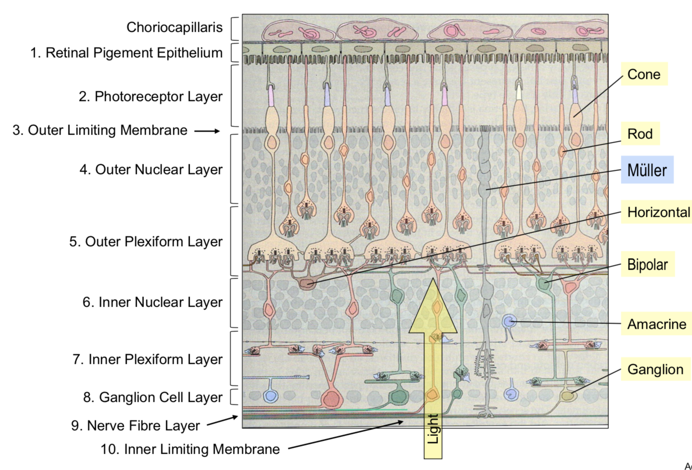
Fig. 103 Figure 5. The layers of the retina, from the pigment epithelium at the back to the inner limiting membrane. Light enters from the bottom and passes through the ganglion, amacrine, bipolar and horizontal cells before reaching the rods and cones.#
pigment absorbs stray photons to reduce noise
cones
~6 mil cones
low sensitivity
fast responses
don’t saturate
selective for the direction of light rays
rods
~120 mil
high sensitivity to light
slow responses
saturate
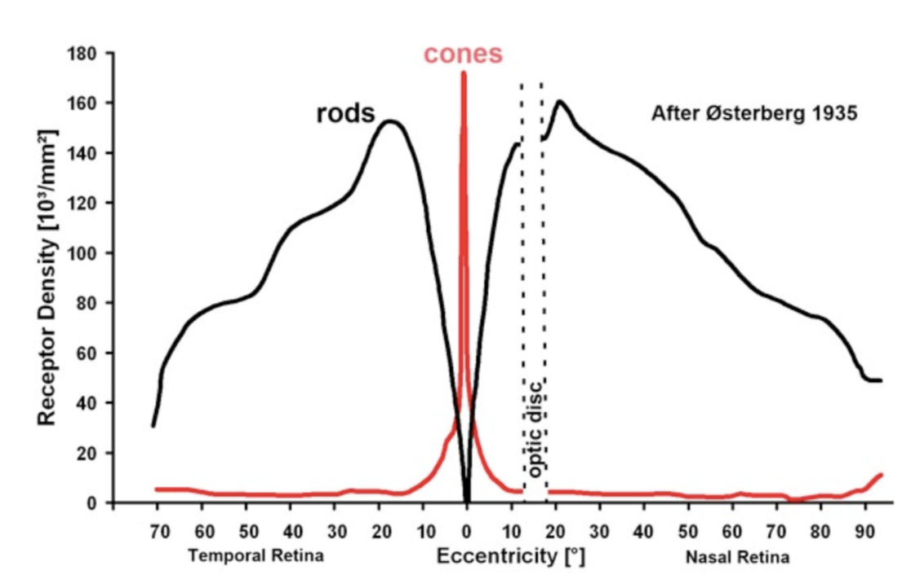
Fig. 104 Figure 6. Rod and cone density across the retina. Cones peak sharply at the fovea (0°), where there are no rods; rods peak around 20° and fall off toward the periphery. Neither is present at the optic disc.#
photo-transduction - converts photons into voltage-changes
terminals
cone pedicle
rod spherule
glutamate release modulated by voltage + Ca
Horizontal cells - outer retinal signaling and lateral inhibition#
An on-center cell responds best to a small light spot. Make the spot bigger and it reaches the surround, where horizontal cells feed inhibition back onto the photoreceptors, so the response drops. In predictive coding terms, the surround predicts the center and only the difference is sent on.
on-center - responds to white small circle
off-center - responds to black small circle
horizontal cells - if you make circle to big, these inhibit the photoreceptors
adjust for mean by shifting calcium with hc surround antagonism (5 possible biphysical mechanisms)
extracellular pH
ephaptic mechanism
natural scenes contain strong spatial correlations
predictive coding - use surrounding regions to predict the center value
subtract predicted value from actually measured value
send nothing if you could have predicted, otherwise info you send is interesting
Signaling pathways through the retina - amacrine cells and inner retinal processing of visual information#
Bipolar cells start the parallel channels, and amacrine cells shape them on the way to the ganglion cells. Starburst amacrine cells are where the retina’s direction selectivity comes from.
bipolar cells begin parallel signalling in the visual system
amacrine cells - generally modulate bipolar cells / ganglion cells
very structurally diverse: glycinergic = narrow-field, GABAergic = wide-field
way more cones than ganglion cells
ganglion cells have object motion sensitivity
generated by lateral inhibition
starburst amacrine cells - generate directional signals in the retina
Retinal ganglion cells#
The retina’s output. Midget cells (most of them, high acuity) feed the parvocellular pathway and parasol cells (high temporal resolution) the magnocellular one; direction-selective cells get their tuning from starburst amacrine cells.
takes inputs from bipolar cells
Primate retina#
primate retina has 2 major types of ganglion cells
midget ganglion cells (~75%) - majority, high spatial acuity
parvocellular pathway
parasol ganglion cells (~15%) - high temporal resolution
magnocellular pathway
little known about most other types of ganglion cells
we don’t have aliasing because visual system filters out the high frequencies
color
red-green keeps center surround
blue-yellow doesn’t
direction-selective ganglion cells
activated when the image moves on the retina
specific allele can get rid of these (affects GABAergic starburst amacrine cells)
different dendrites represent different directions (inputs are pretty symmetrical)
Non-neuronal retina stuff#
The cells that keep the retina running: glia, the pigment epithelium and two separate blood supplies. Each comes back in the diseases section, since that is where things fail.
Retinal glia#
Müller cells span the whole retina and do most of the housekeeping (support, energy, glutamate recycling, K⁺ balance). Astrocytes sit along the vessels, and microglia are immune cells that also maintain synapses.
glia greek for “glue”
3 types
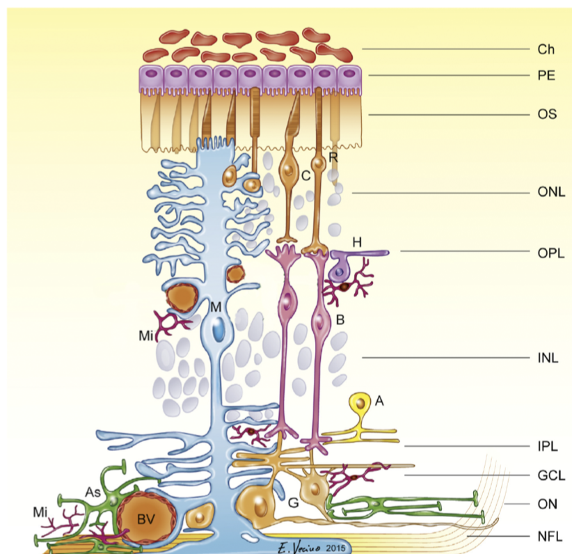
Fig. 105 Figure 7. The three kinds of retinal glia: Müller cells (M) spanning the whole retina, astrocytes (As) around the blood vessels and nerve fiber layer, and microglia (Mi) in the synaptic layers.#
Muller cells
from multiplotent retinal progenitor cells (same that make neurons)
in fish, with damage muller cells can become neurons (forced in mammals)
abundant, tile the retina
functions
mechanical support
energy storage
clearing waste products
neurotransmitter recycling (ex. glutamate-glutamine cycling)
metabolism
K+ homeostasis (uptake and redistribution)
disease - gliosis - upregulation of intermediate filaments common in many retinal diseases
astrocytes
originate from brain, enter via optic nerve
look star shaped
functions: lots of neurovascular
cell bodies don’t move, but processes constantly move
disease - become reactive in many retinal diseases
microglia
myeloid origin
concentrated in synaptic layers
immune cells - phagocytosis
disease - activation occurs with / before retinal cell death
microglial depletion alters retinal synapses \(\implies\) microglia maintain synapses (wang et al. 2016 j neurosci)
microglia are highly motile and respond dynamically to stimuli (e.g. neurotransmitters)
microglia respond dynamically to injury
Retinal pigment epithelium (rpe)#
A single layer of pigmented cells around the photoreceptor tips. It absorbs stray light, eats the outer segments as they are shed (a photoreceptor is renewed in about 11 days), and recycles retinoids for the visual cycle.
monolayer of pigmented, hexagonally-shaped epithelium cells
surround outer segments of photoreceptors
cells have tight junctions
functions
main: light absorption
epithelial transport - require water + photoreceptor cycling + oxygen
photo-oxidation causes damage - photoreceptor tip constantly being phagocytosed, base regenerated - completely renewed in 11 days
visual cycle - recycling retinoids
number of diseases involve this
others: phagocytosis, secretion, glia
Retinal blood supply#
The retina has the highest metabolic demand of any tissue. The choroid feeds the outer third and the central retinal artery the inner two thirds, with no capillaries over the fovea, where they would block light.
retina has highest metabolic demand of any tissue
vasculature - eye is only place we can noninvasively view vasculature
often diagnose stuff like hypertension / diabetes fom eye
2 major blood supplies (non-overlapping)
outer retinal blood supply (past RPE) = posterior ciliary arteries
outer 1/3
bruch’s membrane
choroid - helps provide nutrients, cool retina
inner retinal blood supply = central retinal artery
inner 2/3
no inner capillaries in foveal avascular zone - area near fovea (these would block light)
blood-retinal barriers (BRB)
outer BRB - tight junctions between RPE cells
fenestrated - leaky
inner BRB - tight junctions between capillary endothelial cells
non-fenestrated
autoregulation of retinal blood supply
outer - under sympathetic control
inner - autoregulated by neuronal demands (neurovascular coupling)
Retinal diseases#
Three diseases, each damaging a different layer: macular degeneration (photoreceptors, RPE and choroid in the macula), diabetic retinopathy (leaky capillaries), and glaucoma (ganglion cells and the optic nerve).
these are the 3 retinal diseases deepmind is studying
Diabetic retinopathy#
leaky blood vessels - often diagnose diabetes through retinopathy
diabetes types
type 1 - autoimmune reaction destroys pancreating \(\beta\) cells that produces insulin: hyperglycemia + hypoglycemia
type 2 - reduced insulin sensitivity: mainly hyperglycemia
need insulin injection
diabetic retinopathy types
proliferative
very bad
non-proliferative
microangiopathy - mainly affects capillaries
patients probably won’t notice this unless its in the macula - this is why diagnosis w/ ml could be useful
neuronal changes seem to precede vascular changes
treatment - intravitreal injections of anti-VEGF treatments
Glaucoma#
optic neuropathy with ganglion cell death and visual field loss
people say “pressure in the eye” - but this is just a risk factor
lose your periphery slowly
optic nerve
1-2.2 million ganglion cell axons
~40% of total afferent input to the brain/
cup - region where there are no axons
Experimental methods#
No method is good on every axis. The figure places each one by the size of tissue it sees and the timescale it resolves; the sections below go through them by what they measure: spikes, electromagnetic fields, dyes, or blood.

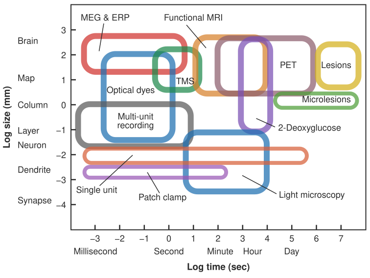
Fig. 106 Figure 8. Neuroscience methods placed by the size of tissue they see (log mm, from synapse to whole brain) and the time span they cover (log seconds). Patch clamp and single units are fine in space and time; fMRI and PET see the whole brain but over seconds to minutes; lesions cover days or longer.#
7 dimensions
spatial res.
temporal res.
depth - how deep in can you image
toxicity - does it damage the cells
spatial field - how big a region can you see
temporal duration (how long it can stay in)
invasiveness
Single cell#
Electrodes give the best temporal resolution, and intracellular recording measures the membrane potential directly. The cost is invasiveness and biased sampling: the few neurons recorded tend to be large, excitatory, and shown unnatural stimuli.
fluorescence imaging
gfp - protein, gets spine-level precision
calcium imaging - not a protein, but still does fluorescence
microelectrode recording
extracellular recording
can measure local field potentials - sum of local currents (most of the volume is in the dendrites - not a great proxy for spikes)
can go deep
spikes are less ambiguous than in calcium imaging
intracellular recording
can measure membrane potential much more precisely
strengths
great temporal resolution
weaknesses
invasive
single neurons has potential biases
80 neurons are not representative
more likely to record from excitatory, bigger neurons
unnatural stimuli
Alteration#
Methods that change activity instead of recording it: optogenetics (light-sensitive opsins delivered by virus, transgenic animals or electroporation), TMS (a brief pulse from a coil on the head), and microstimulation through electrodes.
optogenetic probes
light-sensitive opsins are genetically modified - when light shines on it, does something (depolarize, hyperpolarize, alter intracellular signaling)
delivery
viral infection
transgenic animals
electroporation
transcranial magnetic stimulation
coil sits on head, induces current
pulse is brief - 1 ms
functional effects are long - milliseconds, minutes, days…
uses
enhance neural function
probe excitability
explore functional anatomy
“virtual lesions” - but lingers, …
local microstimulation with invasive electrodes possible
Measure electromagnetic signals#
EEG records synchronous activity from the scalp and is analyzed by frequency band or as event-related potentials. MEG measures the magnetic fields instead, which the skull distorts much less.
EEG (electroencephalography)
recorded on scalp (only gets synchronous activity)
can analyze frequencies (higher frequencies like gamma are attenuated)
delta
theta
alpha
beta
gamma
0.5-4 (Hz)
4-8
8-13
13-30
30-50
can analyze event-related potentials (when the signals peak)
ECOG = electrocorticography - put electrodes on brain (for patients)
MEG (magenetoencephalography)
measure magnetic fields generated by active neurons
fMRI type setup
higher spatial resolution
signal is not really distorted by skull (magnetic field goes through better)
Dyes#
voltage-sensitive dyes
leaks over everything - can’t select for single neurons / spikes
looks at large spatial field, but can’t resolve single cells
dyes are toxic to neurons over time
Blood#
These methods read activity through blood flow, so they are slow. fMRI’s BOLD signal follows oxygenated hemoglobin: activity first uses up oxygen, then blood flow overcompensates, and the signal cannot tell excitation from inhibition.
intrinsic signal optical imaging
shine in light and see what’s reflected - oxygenated is more reddish, deoxygenated more bluish
have to expose surface of brain (but can do pre-surgical imaging in humans)
spatial res limited by capillaries (100 micrometers)
temporal res - slow because neurovascular coupling is slow
fMRI
applied magnetic field - very large, homogenous magnetic field
pulse of energy in radiofrequency range excite protons
protons emit energy at resonance frequency proportional to local magnetic field strength (this called nuclear magnetic resonance)
magnetic field gradients allow for spatial localization of MR signal in 3d
rate of energy decay in brain depends on local biochemistry + oxygenated hemoglobin
BOLD = blood oxygenation level-dependent signal
blood oxygenation has linear relationship with decay
pipeline
activity -> more oxygen use + cerebral blood flow -> magnetic field distortions -> MRI signal intensity
activity make oxygen go down real quick then blood flow over compensates, then saturates
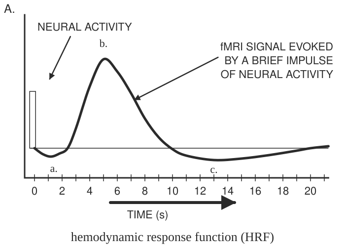
Fig. 107 Figure 9. The fMRI response to a brief burst of neural activity: a small initial dip (a), a peak around 5 s (b), and a long undershoot (c) before returning to baseline about 20 s later.#
can’t separate excitatory / inhibitory
LFP predicts BOLD well (only slightly better than MUA)
all are really pretty well correlated
fMRI analysis
block design - usually have block of nothing between stimuli blocks
activation statistics - compare activation between conditions
event-related design - all trials analyzed over time

PET#
PET
fMRI type setup
radioactive thing (positron) put into brain
as it decays, can triangulate things
cells with most FDG (a tracer) are using the most glucose
now used for studying neurotransmitter maps
good for studying specific radiolabeled tracers
relatively poor spatial res (1 cm), temporal res is minutes
minor risk
Mapping visual cortex#
Maps of visual cortex. A rotating wedge maps polar angle, which mirrors at each border between areas; expanding rings map eccentricity. Central vision gets far more of V1 than its share of the retina (cortical magnification).
cortical flat mapping
gray matter has ~ 100,000 somas / mm^3, ~3km axon /mm^3
folds in cortical topology make some things much farther than they seem
most stuff is white matter
sulci - negative curvature (indent)
gyri - postive curvature (outdent)
some sulci are common among all people (landmarks)
columns are organized into “pinwheels” - columns in a circle prefer different orientations in spinning pattern
weaknesses
expensive
poor temporal / spatial resolution
topographic mapping
pimary visual cortex - visual maps seem to be replicated
history
gun people - between franco-prussian war, russo-japanese war
sir joseph whitworth
alfred drupp
william ellis metford
faster bullets would leave, cauterize wound, more local cuts
tatsuji inouye - studied soldiers after gunshot wounds (1909) - learned map of retina in the back of the brain
mapping
each visual areas has some retinotopic mapping
moving points
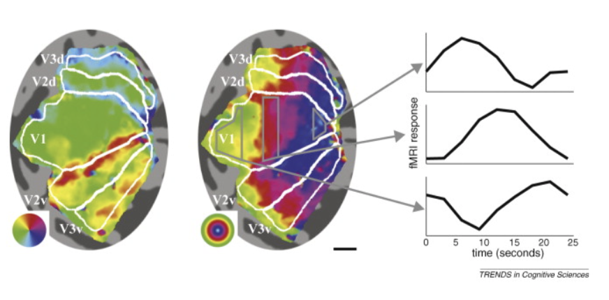
Fig. 108 Figure 10. Retinotopic maps on flattened visual cortex. Left: a rotating wedge maps polar angle, which reverses at each border between V1, V2 and V3. Middle: expanding rings map eccentricity, which changes smoothly with no reversals. Right: fMRI time courses from three locations peak at different phases of the stimulus.#
periodic mapping stimuli - rotating wedge / other things (fig left) \(\implies\) between visual areas (e.g. v1 + v2) mirror image tiling of locations (borders between regions are like mirrors)
eccentricity mapping (fig right) - rings spread out evenly - no mirrors
cortical magnification - way more v1 for central locations
more than proportion of retina dedicated to v1
somehow this is offset to give us our normal perception
population receptive field mapping
predefine each fMRI voxel will respond to Gaussian
over time show stimulus
optimization model finds best point point for each voxel
more efficient than periodic mapping…
Magnetic resonance spectroscopy (mrs)#
just like NMR - put in something like water
gives chemical composition of a region of brain
slow, low resolution
basically pick something (like GABA) and just look at where that is
certain molecules appear the same though….
Info processing in the visual system#
Vision is ill-posed: the same retinal image can come from many scenes, so the brain has to bring in priors. Color constancy and the shadow illusions are examples of those priors at work.
vision is ill-posed problem
light reflection depends on multiple things
light source
material
angle
atmospheric properties
lens sorts EM waves by direction
also lets you get in more light compared to pinhole camera
brain must use priors to create repr. of world
ex. image of a cow - data on retina is messy but you perceive something better
ex. mooney faces - can create stories from images after shading
ex. brown and orange are same hue, but different brightness
3d shadow helps make this better
color constancy - see same colors under different lighting conditions
very large individual differences in ratios of l, m, s cones
eyes develop very suddenly around cambrian explosion ~500 mya
eyes takes ~500k years (very fast) - nilsson & pelger 1994
fish have evolved spherical lens several times independently
can understand lenses if we understand optics
can understand brain if we understand principles…
compound eyes (ex. fly) repeat dots each get slightly shifted version of world
collects lots of light - operates at very high speed (e.g. fly h1 neuron bialek 2001)
sand wasp can find its nest based on pattern of stuff that surrounds its nest
jumping spider has interesting visual system
Dynamic range of rods + cones#
Spontaneous isomerizations set the lower limit of light detection. Above it, rods saturate and cones turn on then off, and the two types of horizontal cell (HI and HII, contacting different photoreceptors) add lateral inhibition for contrast.
spontaneous isomerizations determine lower limit of light detection
rods
saturate
cones
turn on then off
lateral inhibition - improves contrast
horizontal cells
HI (type B)
dendrites contact rods, M/L cones
connected via gap junctions
HII (type A)
dendrites contact S, M/L cones
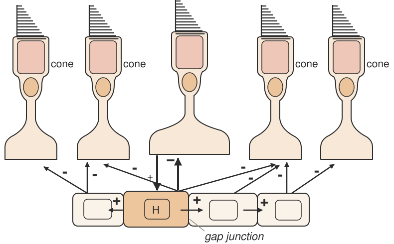
Fig. 109 Figure 11. Horizontal cells take excitation from cones and feed inhibition back onto them. Gap junctions spread the signal across neighboring horizontal cells, so each cone is inhibited by activity in its surround.#
bipolar cells
rod v. cone
on v. off
midget v. diffuse
amacrine cells
link bipolar cells to ganglion cells

Whitening and tiling#
Neighboring pixels in natural images are correlated, with power falling as frequency rises. Barlow’s redundancy reduction says the optic nerve should remove those correlations, and the filter that flattens the spectrum looks like a center-surround receptive field.
redundancy reduction (horace barlow 1961) - pixels are correlated, want to compress info
second-order statistics (auto-correlation function) - pixel correlation vs. spatial separation of pixels
power spectrum of natural images - average power over angles
power goes down for higher spatial frequencies (white noise would be flat)
seems to go down as ~1/freq universally
optic nerve should send unpredictable signals ~look like white noise, decorrelated
shouldn’t be able to predict one nerve from the others
this is because nerves + spikes are expensive
multiply by filter = frequency to get filter that is flat (whitening - atick & redlich 1992)
this is a lowpass filter
this filter looks like center-surround 2D filter (looks like edges)
wasn’t feasible to do this experiment (measuring optic nerve) until recently but has been shown to be true
people have characterized spatiotemporal power spectrum of natural scenes
ex. dan et al. 1996 - LGN neurons whiten time-varying natural images but not white noise
efficient coding model (karklin + simoncelli 2012)
why need on and off type - duplicates each cone
hypothesis: RGCs send spikes which are discretized (not continuous like all the signals within retina)
differences need to be able to send positive/negative rates - this requires having 2 cells
alternatively could have a baseline and send more or less but baseline signal is wasteful because usually send 0
still don’t send 0 as 0 firing rate because too slow to send a 0
try to maximize information out of firing rates - penalty on firing rates
simulation with some neurons on natural images
yields on-center / off-center neurons
optic nerve has pretty equal firing rates - don’t get pca type solns
tiling - ratio varies with eccentricity (higher cone:ganglion ratio in periphery)
bipolar:ganglion is 1:1 in fovea
dendritic field diameter increases linearly with eccentricity
cones also increase
RGCs limit peripheral vision not cones
picture here!!! smoothing and subsampling by RGCs
scale-invariant sampling lattice - same amount of RGCs regardless of how far smth is
but more photoreceptors per ganglion cell (maybe higher signal to noise ratio)
ex. with letters getting bigger in surround
Visual pathways#
Everything visual passes through the thalamus on its way to cortex. The LGN keeps the parvo and magno channels in separate layers, and other retinal targets handle eye movements, circadian rhythm and the pupil.
Visual pathways#
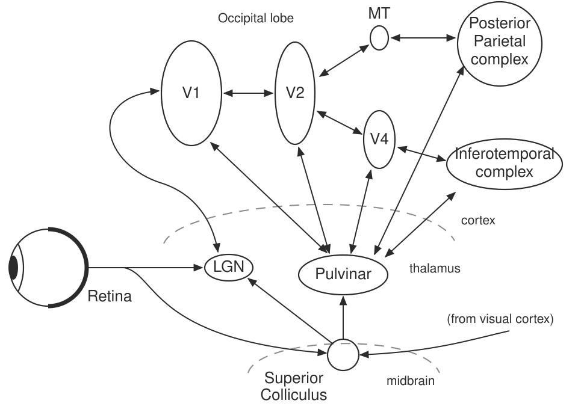
Fig. 110 Figure 12. Retina to LGN to V1, then V2, V4 and inferotemporal cortex (ventral) and MT and posterior parietal cortex (dorsal). The superior colliculus and pulvinar give a second route from the retina to cortex.#
organization
thalamus + cortex always work together = thalamocortical system
midbrain - reptilian, old
all sensory must pass through thalamus to get to cortex
vision must pass through LGN (also stuff goes back to pulvinar)
different RGCs that do different things have different dendritic field diameters
6 main targets
LGN (thalamus)
has 6 layers
superior colliculus (midbrain)
eye movements - sensory map on top of motor map - can make eyes move to a location
map centered at eye location
thought to be reflexive
without LGN, get blindsight - can catch a ball, dodge things, …
suprachiasmatic nucleus
circadian rhythm
gets input from special photosensitive RGCs that are big + slow
accessory optic system
pretectum - pupillary light reflex
pregeniculate

Lgn#
Six layers: the upper four parvocellular (from midget cells), the bottom two magnocellular (from parasol cells). The split by spatial and temporal frequency that starts in the retina stays separate here.
has six layers
parvocellular are upper 4 layers
subdivided by on/off, left/right
inputs from midget cells
magnocellular are bottom 2 layers
inputs from parasol cells
losing magno seems to lose spatial frequency, control different temporal frequencies, parvo gives you color
important - different spatial/temporal frequencies - differentiate from the beginning
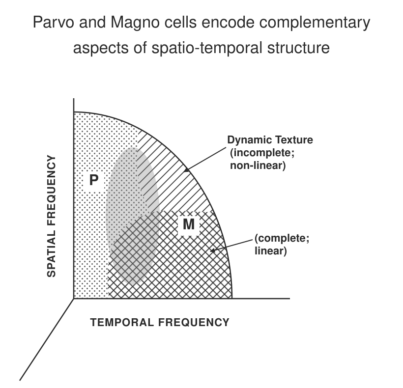
Fig. 111 Figure 13. Parvo (P) cells cover high spatial and low temporal frequencies, magno (M) cells lower spatial and higher temporal frequencies, so the two split the spatiotemporal spectrum between them.#

Color#
More is known about color from psychophysics than from recordings. L and M cone signals are strongly correlated, so PCA turns them into a luminance channel plus two color-difference channels that can be blurred, which is why color costs only about 10% more than black and white.
L, M, S cones (red, green, blue)
have learned more from psychophysics than from neural recording
psychophysics: adapt to one axis of color
people habituate to directions based on changes of cones (ex. adapting to S cone doesn’t affect L & M cones)
color oponnency in LGN (derrington et al. 1984) - 2 types of color cells in LGN
cone response distributions
L and M correlate a lot
L and S correlate a little
pca goes to luminance, \(\alpha\), \(\beta\)
luminance dominates
color really takes only ~10% more space than black-and-white
decompose into luminance image and 2 color difference images
non-luminance image requires less bits (can be blurred, less bits)
Eye movements#
saccades - old, human vision is fundamentally dynamic
head also moves while eye moves and they help counteract each other
when in bite bar, saccadic movements are bigger
fixational eye movements
new paper - motion helps you see by sampling cone array
could also be that image fades on retina (ex. troxler fading)
michael land did lots of cool things
V1 (primary)#
V1 is where orientation and direction selectivity first appear. Inputs from the two eyes stay apart in layer 4 (ocular dominance columns) and mix in layers 2/3; the standard model is an oriented linear filter, normalization by neighbors, and a pointwise nonlinearity.
pathways
right part of eyes go to right brain (sees left visual field)
corpus collosum connects left/right brains but nothing else
when you lose it, like there are 2 people within person
very difficult stitching problem…
left and right lgn, superior colliculus, …
regions defined by having a topographic map
for later areas, histological differences, connectivity, physiological properties
connections are all bidirectional
retinotopy
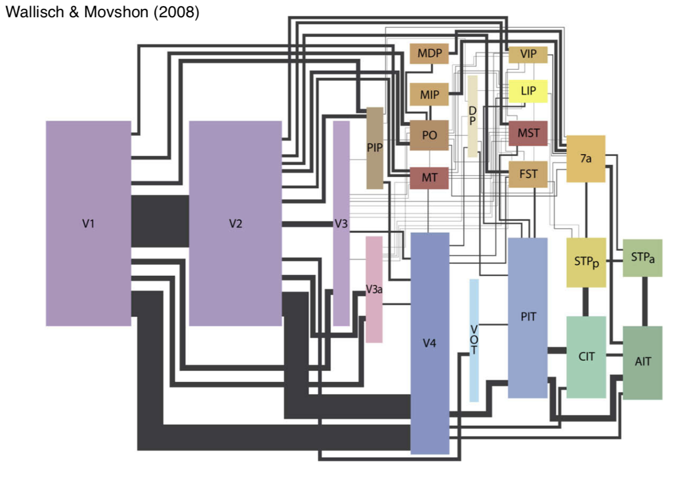
Fig. 112 Figure 14. The connections between visual areas in the macaque (after Wallisch & Movshon 2008), from V1 and V2 on the left through V4 and MT to inferotemporal and parietal areas.#
v1 has map of retina that’s flattened (proportional to ganglion cells)
probably no “fixed up” image of the world somewhere
could understand perception in terms of action
LGN wires don’t interact with each other too much
some inhibitory interneurons
cortex
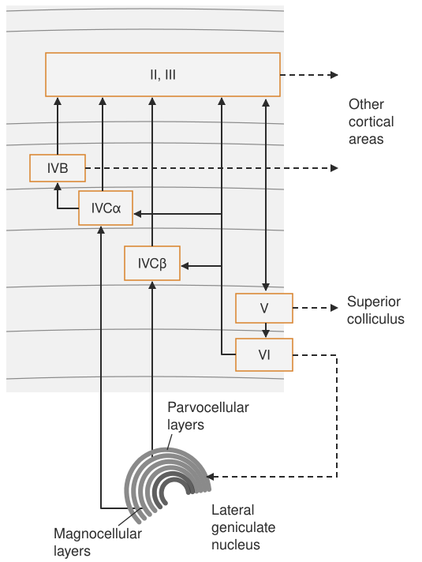
Fig. 113 Figure 15. Laminar connections of V1. Magnocellular LGN layers project to layer IVCα and parvocellular layers to IVCβ; both feed layers II/III, which project to other cortical areas. Layer V projects to the superior colliculus and layer VI back to the LGN.#
~2mm thick
layer 1 - mostly axons
layer 2/3 - association layer
lots of neurons connect to each other
layer 4 - input layer
further subdivided (parvo goes to one, magno to another)
layer 5 - output layer (usually to motor)
comes back tho LGN (adam sillito)
unclear what it does - experiments with cooling cortex don’t yield too many profound changes
neurons from different eyes go to different regions of layer 4 (and then mix in layer 2/3)
ocular dominance columns (only within layer 4) - one eye has bands, other eye has other bands
hypercolumn - put 2 eyes together
lots of metabolic blobs tiles this
contains lots of neurons with different orientation selectivities
monkey has ~1k hypercolumns in V1
contains 100k neurons
14 x 14 pixel array (coming in from thalamus)
1 mm^2 of cortex contains 100k neurons
v1 is highly overcomplete - way more neurons than needed
electrophysiology
electrode pics up microvolts
v1 properties not in LGN
orientation selectivity
direction selectivity
simple cells sum LGN inputs
retina and other things are wired up before birth
standard model of V1
neurons have oriented receptive fields (inhibited by bars around bar) with some temporal component
response normalization, based on neighboring neurons
pointwise non-linearity
bruno doesn’t really believe this leads to perception
neurons are highly nonlinear
recurrent circuits of neurons are even more nonlinear
there is no general method for characterizing nonlinear systems
good model
should be in the structure of layers
why do we need so many neurons
problems
biased sampling - single units, ignore inhibitory, only find neurons that fire for what you want
biased stimuli - bars/spots/etc.
biased theories - data-driven vs. theory
interdependence and context of scene
ecological deviance
power spectrum
horizontal spatial frequency of 0 - vertical grating
fft function assumes image at boundary is tiled - artifacts giving artificial edges (spatial frequencies of 0)
could attenuate function at edges to fix this

Extrastriate cortex#
Beyond V1 the areas split into a dorsal stream through MT (motion, where things are, vision for action) and a ventral stream through V4 and IT (color, form, objects, faces).
striate cortex - v1 (has some kind of stripe - not striatum)
extrastriate cortex - everything else
all areas have one part on each hemisphere
orientation columns - columns have similar orientation preferences
doesn’t have to do with ocular dominance columns
laterally within layers get all orientations in very small area
repeated - one orientation will be represented lots of times
different columns represent different xy coordinates
overview
dorsal stream - where
mt (middle temporal area)
spatial visual pathway - positional relationships
vision for action pathway
ventral stream - what
v4
object recognition pathway
high resolution and form
10x more feedback, no strict motor areas, but lots of visuomotor areas
V2 / V3 aren’t clearly in either stream
Dorsal stream#
MT has columns for direction of motion, STS responds to biological motion (a dozen moving dots that look like a person), and parietal cortex handles spatial attention.
adaptation - like psychophysicist’s electrode
area MT (middle temporal of macaque, although farther back in human)
has preferred motion orientation columns
visual area STS (superior temporal sulcus) responds to biological motion
ex. 12 dots look like people
parietal cortex also important for spatial attention
biomotionlab is cool
Ventral stream#
V4 follows perceived color rather than wavelength. IT has cells that respond to single people or objects, and areas such as the FFA (faces) and PPA (places).
V1 -> V4 -> IT ->LGN
we’re constantly adjusting for changes in illumination
v4
v4 seems to correspond to perceived colors not wavelengths
damage to v4 stops you from seeing in color
selectivity of v4 responses
mixed magno and parvo inputs (ferrera et al. 1994)
IT
single column thing…
jennifer aniston cell
hand
Halle Berry cell
columnar architecture in IT also though….
pseudo semantic columnar architecture (ex. facial perspective)
face perception orientation can be discriminated by newborn baby (meltzoff)
can also imitate faces
babies have trouble resolving high frequencies
areas
FFA - face selective, fusiform face area
might not be faces, could be expertise
PPA - places, parahippocampal place area (surrounds hippocampus)
things are assymetric in unclear ways (although they contain representations of different visual fields)
Sparse coding#
Why V1 has oriented, localized, bandpass receptive fields: representing natural images with as few active neurons as possible produces them.
this isn’t really sparse coding, move elsewhere: power spectrum falls off with frequency as \(1/f^2\)(amplitude falls as 1/f)
want to decorrelate - multiply by frequency that’s \(f^2\)
you can’t do this for very high frequencies otherwise you amplify noise
in spatial domain, looks like center surround similar to finding edges
v1 has map of space, magnified at fovea
want to explain how center-surround ganglion cells -> elongated orientation selective receptive fields
representation - complete repr. with minimum number of possible neurons
deeper in cortex - cells become more silent
codes: insert pic!!!!
dense -> sparse -> local (grandmother) codes
sparse coding has questionable empirical evidence
lgn fibers around 20 spikes / sec
layer 4 fires ~ 1 spike /sec
we don’t know this at other layers
sparseness seems pretty constant as you go deeper (Rust & DiCarlo)
tradeoff between complexity and invariance
V1 simple cells are oriented, localized, bandpass
projection pursuit (Field 1994) - project distr. onto low dim: you should get gaussian
want to find axes that maximize non-gaussianity
project idea
look at sparsity in different layers
sparse coding is v1 + retina!!! basis transformation
Object recognition#
The Gabor function (a sinusoid under a Gaussian envelope) is the standard model of a V1 simple cell. The section then treats perception as inference in a generative model: higher areas make guesses and send corrections back down (Lee and Mumford).
gabor function - convolve Gaussian with sinusoids of different frequency
from dennis gabor
in gabor transform, each basis function has same number of wobbles (self-similar)
at top of visual system goes to entorhinal cortex then to hippocampus
map sizes
V2 little bigger than V1
they fold over so that map of V1 goes 1-1 with map of V2
neocognitron is unsupervised
comments:
“vision is about more than object recognition so deep nets don’t work”
turing test for vision
affordance = prior
not like deep net which is a top box
lots of outputs from intermediate areas
perception as inference
generative model we’re trying to fit data too
bayes rules: \(P(E\vert D) \propto P(D\vert E) \cdot P(E)\) where E is environment and D is data about environment
lee + mumford, 2003 - hierarchical bayesian inference in visual cortex
each area makes guesses and higher areas send back corrections
mumford - fields medalist
in real life, we are constantly guessing and trying to resolve ambiguities
Top-down modulation#
Attention changes responses in V4 and even V1. Endogenous attention is voluntary and slow, exogenous attention is involuntary and fast.
attention is most-studied (refers to some different things)
endogenous attention - voluntary, slow, effortful, interruptible
exogenous attention - involuntary, fast effortless, disruptive
attention is about more than where the eye is pointing
change blindness - blind to things you’re not attending to
invisible gorrila, door study
covert attention - posner cueing task
Endogenous#
better studied because it’s hard to disentangle stimulus vs. attention in exogenous case
v4 very filtered by attention (ex. reynolds + chelazzi 04)
also effects of attention in area v1 (ex. pick a side to attend to while fixating in center)
IPS1 seem to have maps of attended stimuli (but ignore other stimuli)
frontal eye fields - microstimulation forces eye movement
can stimulate enough to attend, but not to saccade
Exogenous#
inhibition of return - if we have attended a region, less like we return to that region
Visual search#
Search is slow when targets share features with distractors. In feature-integration theory each feature has its own map, so finding a conjunction such as a red circle takes longer.
having more similar objects makes it difficult
feature-integration theory - different visual features are coded in parallel in separate feature maps (orientation, size, color)
conjunction search - conjunction of features (ex. red circle) takes longer
plenty of other areas
ADD, alzheimers, intermodal attention, applied attention, attentional tracking, neurochemistry of attention, feature- and object-based attention…
ex. driving - people in car will stop talking in serious situations unlike on phone
predictive coding - unpredicted response evokes larger response
fits with bayesian method - only need large response when you don’t predict what’s going to happen
in this way, prediction is opposite to attention
Visual neuropsychology#
What lesions show: blindsight after V1 damage, motion blindness after MT damage, loss of color after V4 damage, and agnosias such as prosopagnosia.
blindsight - damage to V1; aren’t aware of visual stimuli but can do tasks in forced-choice paradigms
retina goes through some things (ex. pulvinar) that aren’t V1 to get to higher order areas (ex. MT)
dorsal pathway
MT monkey lesions in monkeys impair motion perception but not contrast detection
damage to MT causes motion blindness - life is a set of snapshots
ventral pathway
damage to V4 causes loss of color perception, can’t even imagine colors
patient DF (well-known) - can only do vision for perception + action, couldn’t describe it = visual agnosia - perception as an object is impaired
lots of different kinds
prosopagnosia - can’t recognize faces - FFA, PPA (up to 1%)
spatial neglect - failure to acknowledge objects in field contralateral to the lesion
sometimes group things and only look at right sides of groups
very weird - has strange reference frames
functionally very similar to having blindness on one side
Visual cortical development + plasticity#
The steps any nervous system goes through as it is built, then three stages for the retina-LGN-V1 pathway: wiring set up before experience (with retinal waves), a critical period in which inputs compete, and more limited plasticity in adults.
development things
neurons of right types generated in appropriate places
migrate to final positions
differentiate into final forms
axons must follow right paths
neurons must refine synaptic connections
brain must remain flexible
neurons ride up glial fibers until it stops - cortical layers develop inside-first (tracked)
axon projections - some axons have to travel very far to connect (ex. LGN -> V1)
follows chemical signal (even if it starts somewhere diff ends same place) - roger sperry 1943
3 stages in development of retina-lgn-v1 pathways
experience-independent development - can occur prenatally
ex. segregation in eye-specific layers
retinal waves - spontaneous activity go accross the entire retina
critical period of refinement of connections within and between cortical columns
extremeley sensitive to abnormal experience
competition to decide who connects where
maturation and plasticity in adult life
Adult plasticity#
Aftereffects such as color afterimages and the tilt aftereffect are usually explained by fatigue of the stimulated neurons, but some last far too long for that. Perceptual learning shows adults can still learn new visual tasks, though how far it generalizes is unclear.
these are due to “fatigue” of stimulated neurons
color adaptation - afterim aimages + complementary colors
slight tilt aftereffect as well
problems with fatigue hypothesis
doesn’t account for long-lasting adaptation effect (ex. McCulloch effect lasts very long time)
don’t see optic flow adaptation in driving, even though we see this in the lab
there is a clear critical period for plasticity, although auditory / somatosensory don’t
braille reading in blind subject activates “visual cortex” area
unclear it there is a critical period for this
perceptual learning - can learn new visual tasks
very sensitive to eye, etc.
trying to reat amblyopia
very unclear how much perceptual learning generalizes
Alzheimer’s#
Alzheimer’s shows up in the retina as well. The goal is to find its markers (amyloid plaques, pTau) with noninvasive retinal imaging instead of a stain after death.
manifests in the eye
two biomarkers - can find with PET or MRI
amyloid \(A\beta\) plaque proteins
pTau proteins
bunch of things in retina
ex. RGC loss, NFL atrophy, blood flow rate, inflammation…all exist in other
main thing - look for AB plaques with stains - requires someone is dead
goal: diagnose alzheimer’s via noninvasive retinal imaging + visual function assessment
imaging: modified spectralis HRA + OCT should look at biomarkers (+ other things ex. look at retinal structure deficits)
Key ideas
The retina already processes the image: horizontal cells subtract the surround, bipolar cells split on and off channels, and midget and parasol ganglion cells start the parvo and magno pathways.
Natural images are redundant, with power falling as spatial frequency rises; center-surround whitening and sparse coding are both ways of removing that redundancy before the expensive optic nerve.
V1 is where orientation and direction selectivity first appear, and the standard model is an oriented linear filter, normalization by neighbors and a pointwise nonlinearity.
Beyond V1 the dorsal stream (MT, parietal cortex) handles motion and where things are and the ventral stream (V4, IT) color, form and objects; lesions in each remove those functions.
Every recording method trades spatial resolution, temporal resolution and coverage against each other, so the question decides the method.
White noise plus a spike-triggered average is the basic way to measure a receptive field.